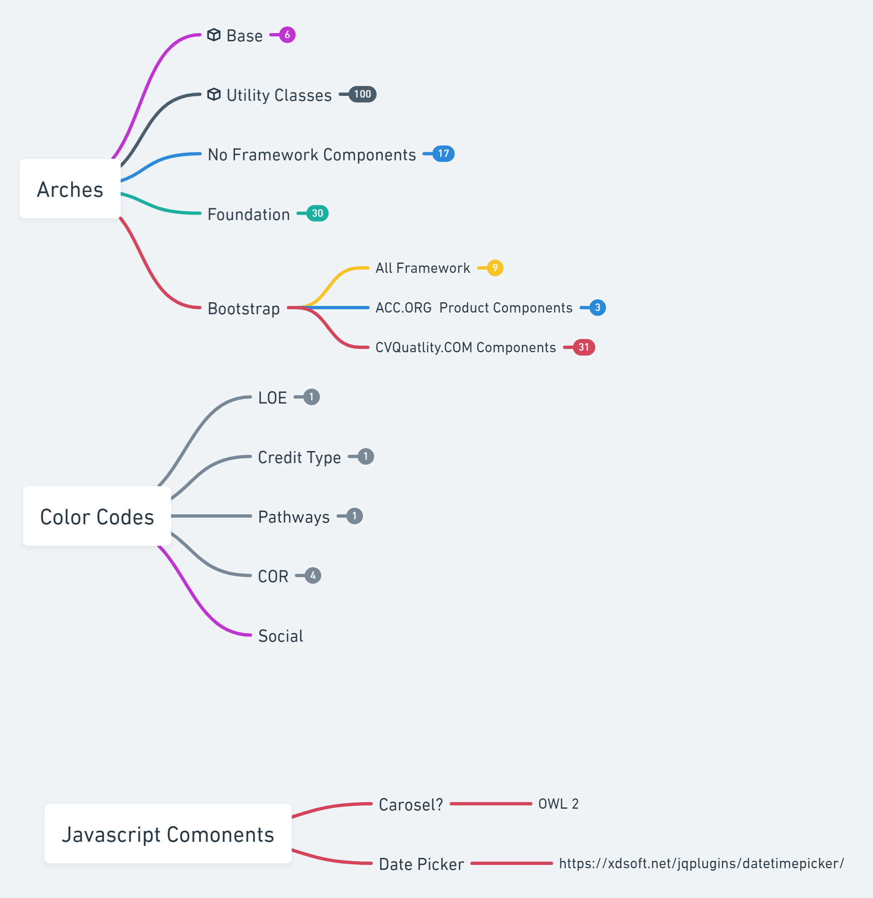

Arches
Multi Product, Framework, Brand Style System
Arches is a central design system for the American College of Cardiology. This system, through some compiler wizardry, builds out to variations using frameworks and product brands to be used across many products built by the ACC. Arches vanilla is just a Utility Classes and when added to a project with an already established style sheet is made to add new styling features non-destructively. There are also variations of Arches that build on top of the two popular frameworks that currently in use at the College, Twitter Bootstrap, and Zurb Foundation. A third variation of the Arches product shifts the brand to CVquality with Bootstrap for a base.
Arches Overview of Variations and Sub Stylesheets
